Hochzeit
Sonnenuntergang am Neusiedler See
Emotionale Hochzeitsreportage im Burgenland
Mit über 30 Jahren Erfahrung verwandle ich Emotionen, Charaktere und Unternehmensvisionen in zeitlose, ausdrucksstarke Fotokunst. In Österreich und international.
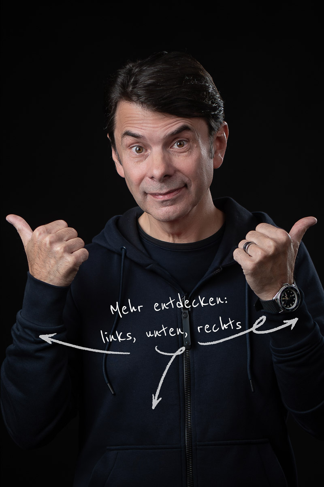
Fotostudio Purbach am Neusiedler See
Jedes Projekt hat seine eigene Seele. Entdecken Sie Impressionen aus Hochzeit, Industrie, Studio, Kunst und handgebundenen Alben.
Emotionale Hochzeitsreportage im Burgenland
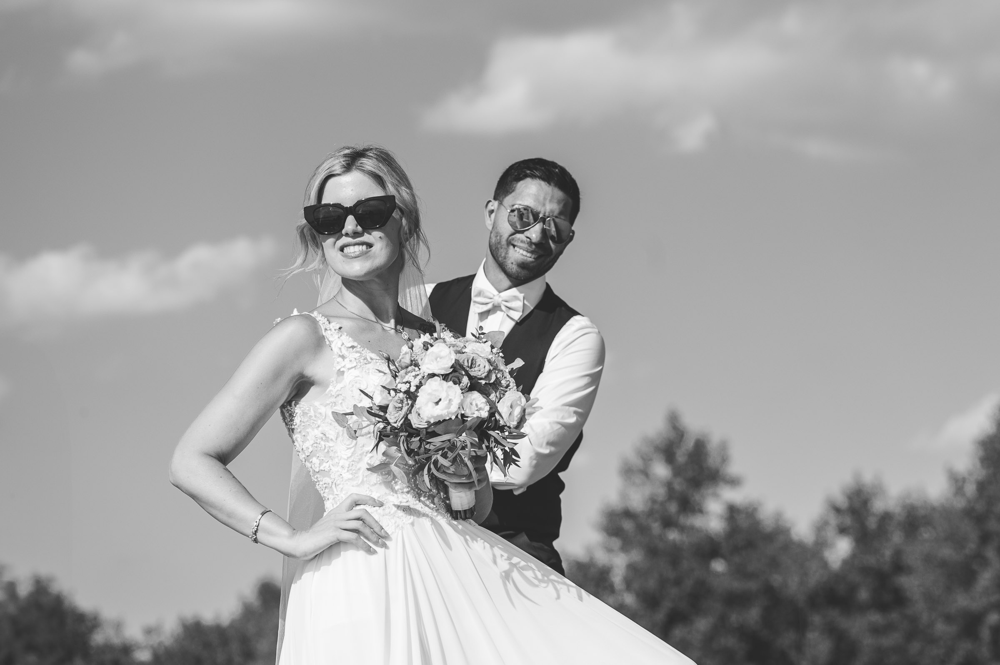
Zeitlose Schwarz-Weiß-Ästhetik voller Intimität
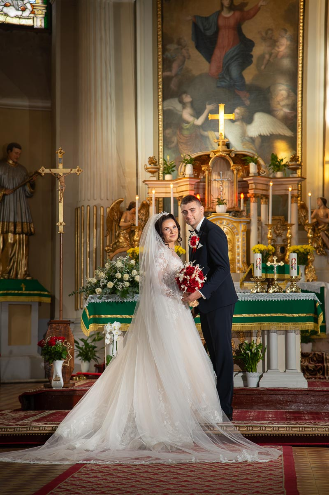
Natürliche Lichtstimmungen & ungestellte Momente
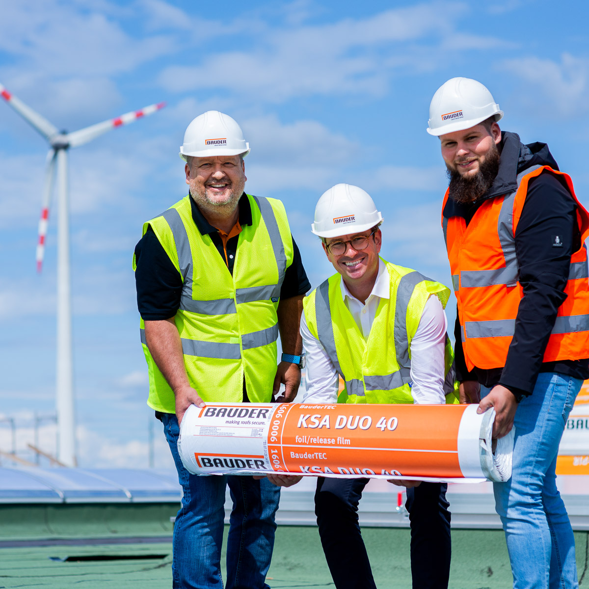
Modernste Bitumen-Fertigungsanlage in Bruck an der Leitha
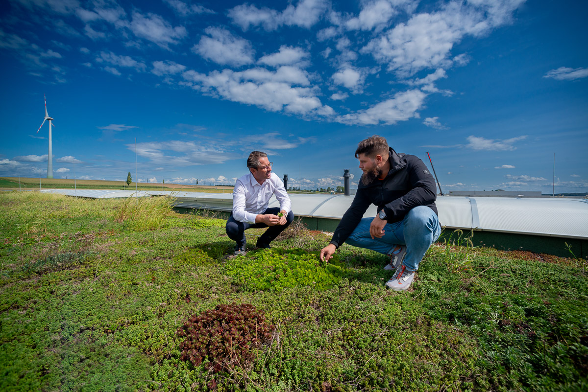
Dynamische Produktionsaufnahmen & Mitarbeiterporträts
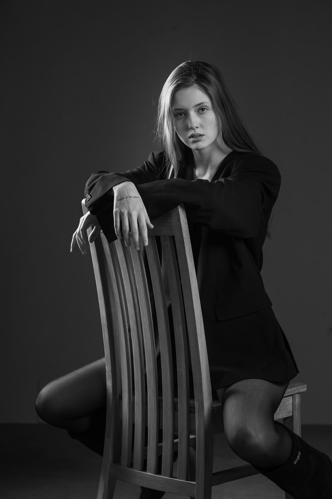
Gezielte Lichtführung & ausdrucksstarke Persönlichkeit
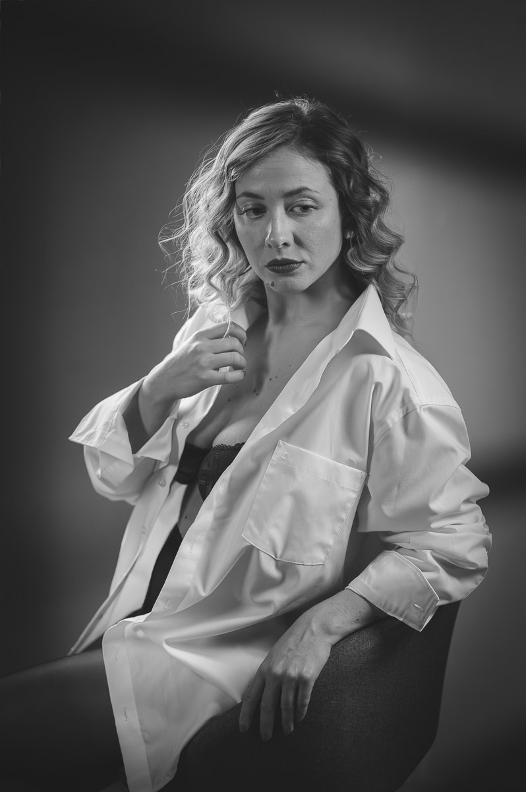
Fine Art Porträtstudie mit sanften Schattierungen
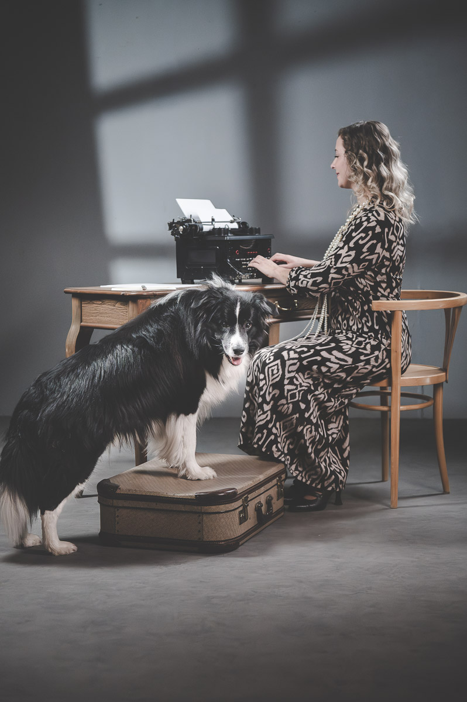
Inszeniertes 1920er-Jahre-Shooting im Studio Purbach
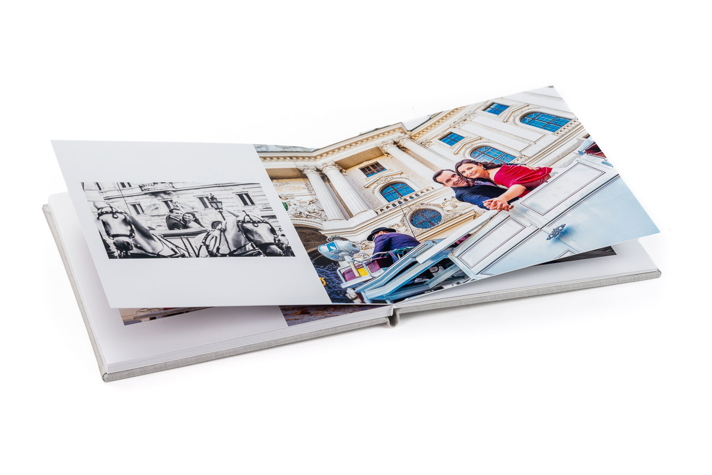
Echtes italienisches Leder & Acrylglas-Cover
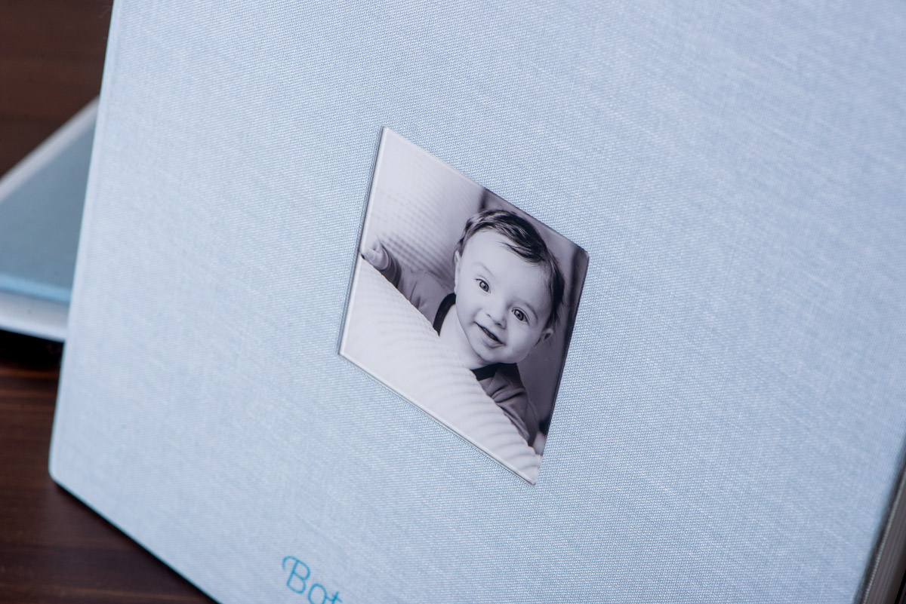
Individuelle Prägung & Fine-Art Prints zur Taufe & Hochzeit
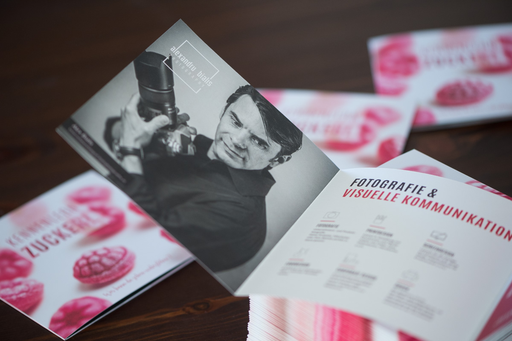
Ganzheitlicher Markenauftritt, Menükarten & Visitenkarten
Jedes Projekt hat seine eigene Seele. Ob Ihr Hochzeitstag, ein charakterstarkes Studioporträt oder die visuelle Identität Ihres Unternehmens – ich fange die Essenz mit höchster technischer Präzision ein.
Vom intimen Kennenlernshooting über die emotionale Ganztagsbegleitung bis zum entspannten After-Wedding-Shooting. Ich halte Freudentränen, Blicke und echte Emotionen unaufdringlich und stilvoll fest.
Visuelle Kommunikation, die Kunden überzeugt. Als gelernter Werbegrafiker verstehe ich Werbewirkung: Ob Firmengebäude, moderne Produktionshallen (z. B. Bauder GmbH), Arztpraxen oder Business-Headshots.
Ein gutes Porträt entsteht nicht zufällig – es entsteht im Dialog. In meinem vollausgestatteten Fotostudio in Purbach oder an faszinierenden Outdoor-Locations schaffen wir Bilder, die Ihre Persönlichkeit leuchten lassen.
Digitale Daten verblassen auf Festplatten – echte Druckwerke begleiten Generationen. Ich fertige exklusive Hochzeitsalben in italienischem Leder, handgefertigte Holzboxen und Acrylglas-Wanddekorationen.
Über 70 % unserer Sinneswahrnehmung erfolgt über die Augen. Ich kombiniere Fotografie mit professionellem Grafik- und Logodesign für einen harmonischen, unverwechselbaren Markenauftritt Ihres Unternehmens.
Keine versteckten Kosten. Wählen Sie Ihren gewünschten Leistungsumfang aus und erhalten Sie sofort eine Richtwert-Kalkulation, die Sie direkt in eine Anfrage übernehmen können.
Richtwert inkl. Bildselektion & hochauflösender Bildbearbeitung. Kleinunternehmer gem. § 6 Abs. 1 Z 27 UStG.
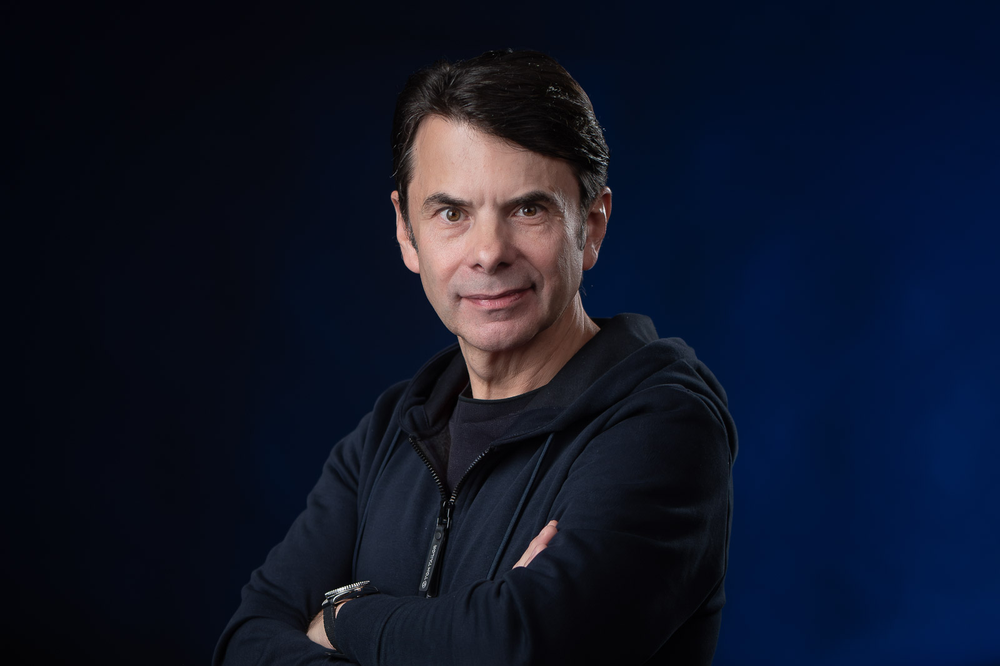
Mitglied WKO Burgenland
Fachgruppe Berufsfotografen & MarktkommunikationIch bin ein junggebliebener alter Hase auf dem Gebiet der Fotografie und lebe im wunderschönen Burgenland – meiner Wahlheimat rund um den Neusiedler See. Angefangen habe ich in den frühen 1990er-Jahren in der analogen Dunkelkammer, wo jedes Bild Geduld, handwerkliches Gespür und Präzision verlangte.
Heute verbinde ich dieses handwerkliche Fundament mit modernster Digitaltechnik, hochpräzisem Lichtequipment und meiner zweiten Leidenschaft: dem Grafik- und Werbedesign. In meinem Studio in Purbach am Neusiedler See (Feuerwehrgasse 12/13) entstehen Porträts mit Tiefgang und Werbekampagnen mit Durchschlagskraft.
„Ein gutes Foto ist ein Foto, auf das man länger als eine Sekunde schaut. Ein Meisterwerk ist eines, das man nie wieder vergisst.“
Alexandru Bialis, Berufsfotograf & Werbegrafikdesigner
Eine intime Hochzeitsreportage im Herzen von Wien. Zwischen barocker Architektur und dichtem Schneetreiben entstanden emotionale Bilder, die Wärme und Verbundenheit ausstrahlen.
Ein herrlicher Frühsommertag in den idyllischen Weinbergen. Ungezwungene Momente, echte Lacher und ein handgefertigtes Leder-Fotoalbum als ewige Erinnerung.
Europas modernste Fertigungsanlage für Bitumenbahnen. Authentische Industriefotografie unter anspruchsvollen Lichtverhältnissen für Geschäftsberichte und Webauftritt.
Eine Original-Schreibmaschine aus den 1900er-Jahren, sanfte Studiolichter und ein außergewöhnliches Hund-Frauchen-Gespann im Studio Purbach.
Verkehrsgünstig gelegen zwischen Eisenstadt, Neusiedl am See und Wien. Auch für Kunden aus Bratislava und Sopron in weniger als 40 Minuten erreichbar.
Schreiben Sie mir unverbindlich über Ihr geplantes Vorhaben. Ich melde mich verlässlich innerhalb von 24 Stunden bei Ihnen.
Alexandru Bialis, Inhaber & Fotograf
Mobil: +43 (0) 676 470 31 51
E-Mail: office@bialisphotography.at
Informationspflicht laut § 5 E-Commerce Gesetz, § 14 Unternehmensgesetzbuch, § 63 Gewerbeordnung und Offenlegungspflicht laut § 25 Mediengesetz.
Alexandru Bialis e.U.
Feuerwehrgasse 12/13
7083 Purbach am Neusiedler See, Österreich
Mobil: +43 (0) 676 470 31 51
E-Mail: office@bialisphotography.at
Web: https://bialisphotography.at/
Unternehmensgegenstand: Berufsfotograf und Werbegrafikdesigner
Steuerliche Behandlung: Kleinunternehmer gem. § 6 Abs. 1 Z 27 österreichisches UStG (keine Ausweisung von Umsatzsteuer).
Mitglied der Wirtschaftskammer Burgenland:
- Fachgruppe Berufsfotografen
- Fachgruppe Werbung und Marktkommunikation
Aufsichtsbehörde / Gewerbebehörde: Bezirkshauptmannschaft Neusiedl am See
Berufsrecht: Österreichische Gewerbeordnung (GewO), abrufbar unter www.ris.bka.gv.at
Alle Fotos, Bildwerke, Texte und Grafiken auf dieser Website sind urheberrechtlich geschützt.
Fotos & Bildgestaltung: © Alexandru Bialis e.U.
Der Schutz und die Sicherheit Ihrer persönlichen Daten sind uns ein zentrales Anliegen. Diese Webseite speichert und verarbeitet personenbezogene Daten ausschließlich im Sinne der europäischen Datenschutz-Grundverordnung (DSGVO) sowie des österreichischen Datenschutzgesetzes (DSG).
Alexandru Bialis e.U.
Feuerwehrgasse 12/13, 7083 Purbach am Neusiedler See, Österreich
E-Mail: office@bialisphotography.at | Mobil: +43 (0) 676 470 31 51
Wenn Sie per Web-Formular oder E-Mail Kontakt mit uns aufnehmen, werden Ihre angegebenen Daten zwecks Bearbeitung der Anfrage und für den Fall von Anschlussfragen bei uns gespeichert. Diese Daten geben wir keinesfalls ohne Ihre Einwilligung weiter.
Ihnen stehen grundsätzlich die Rechte auf Auskunft, Berichtigung, Löschung, Einschränkung, Datenübertragbarkeit, Widerruf und Widerspruch zu. Bei Fragen wenden Sie sich gerne direkt an uns.